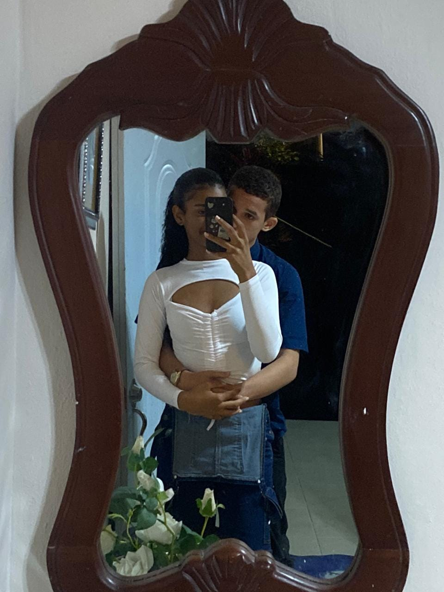
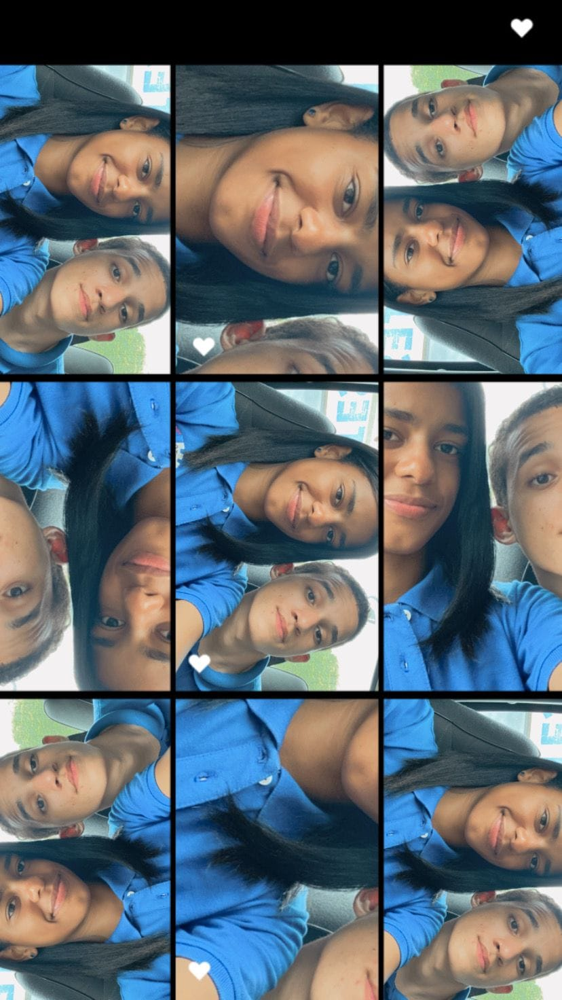
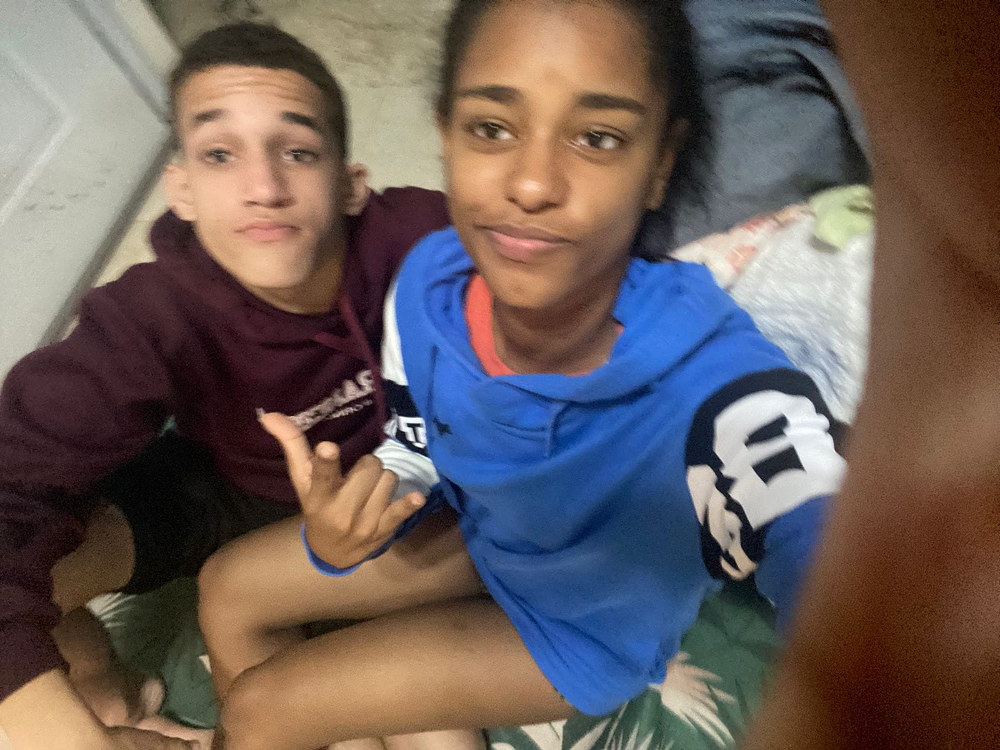
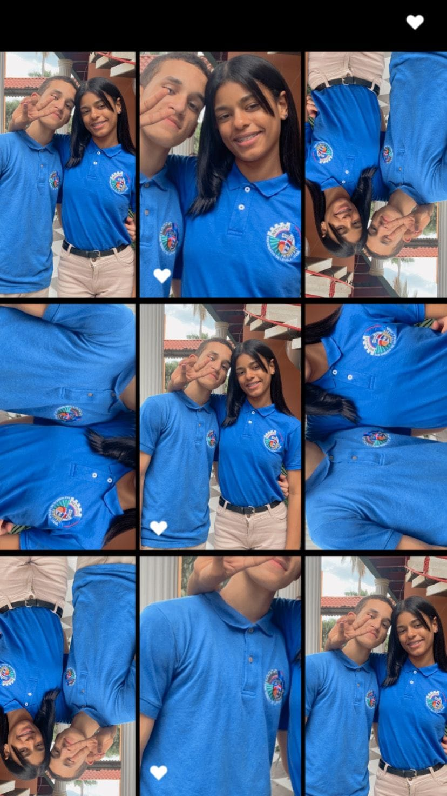
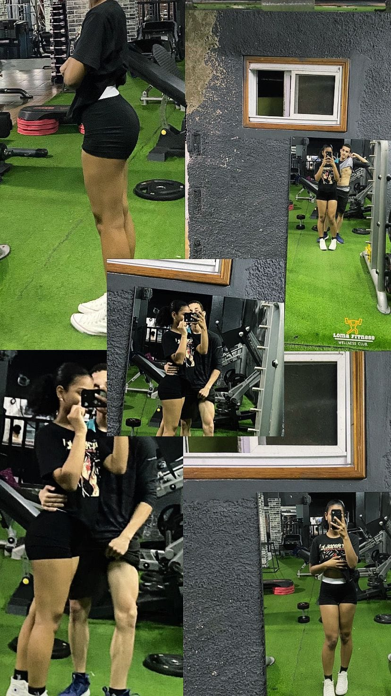
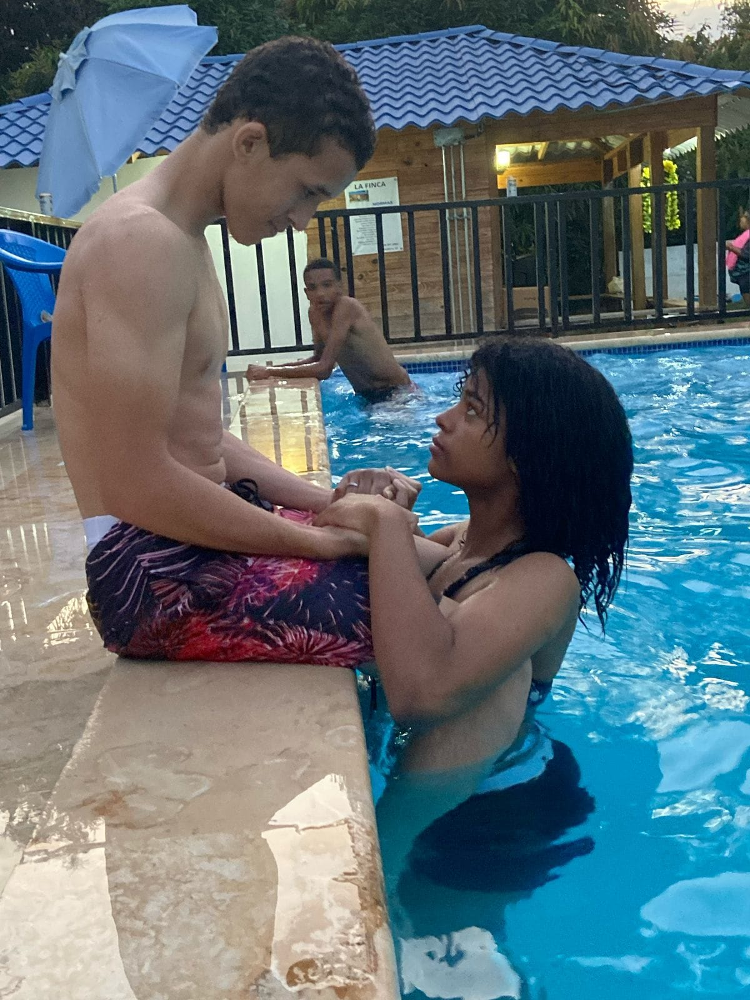
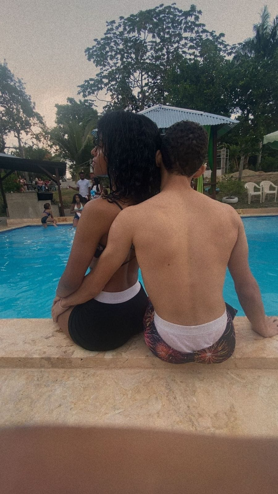

Yohandry,
espero que me perdones…
y que me entiendas
Cada recuerdo que guardo de nosotros me recuerda lo afortunado que fui al coincidir contigo.

«Guardé cada instante contigo en un rincón de mi alma donde nada puede borrarlo»
11:11 ♥
«Duele reconocer los errores del pasado, pero mi arrepentimiento es sincero y mi amor por ti es real»
promesa de cambio ♥




Nuestra Segunda Temporada
«Quizás en el pasado no supimos hacer las cosas bien y nuestra historia no tuvo el final feliz que ambos soñábamos… pero las historias verdaderas no terminan donde hubo dolor: terminan donde renace el entendimiento.»
Hoy no te busco para fingir que nada dolió, sino para agradecerte lo que fuiste, lo que eres y lo que aún significas en mi corazón. Los tropiezos me enseñaron a valorar cada segundo de tu sonrisa, cada silencio compartido y la paz inmensa que solo tú sabías transmitirme. Maduré, reconocí mis errores y comprendí que el amor sincero no consiste en no equivocarse jamás, sino en tener la humildad, el coraje y la nobleza de pedir perdón con toda el alma.
Aún nos queda tinta en las manos y latidos en el pecho. Si la vida nos vuelve a cruzar en el momento correcto, sé que todavía nos quedan páginas enteras para escribir una hermosa segunda temporada: más sabia, más sincera, sin miedos y con todo el amor que siempre guardé para ti.